Passeu el cursor sobre les zones marcades en gris per veure les senyalitzacions o per la llegenda de la maquinària per veure el tipus de màquina i la seva funció.
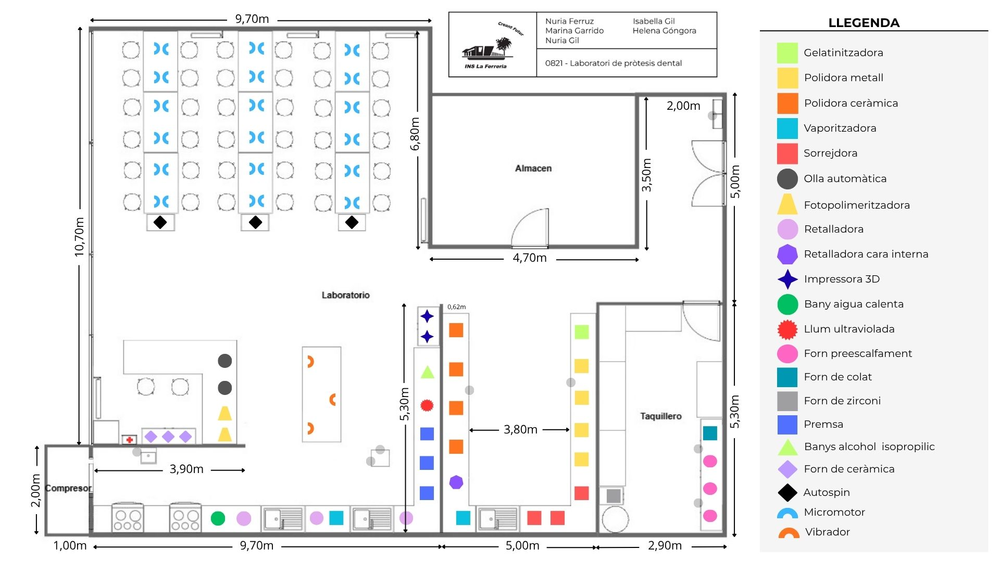
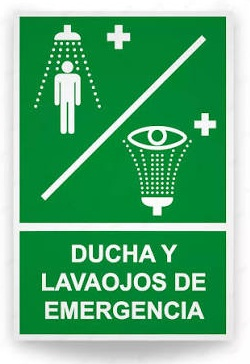
Cartell dutxa i renta ulls Cartell de seguretat que indica la ubicació de la dutxa d’emergència i del rentaülls per actuar ràpidament en cas de contacte amb substàncies perilloses.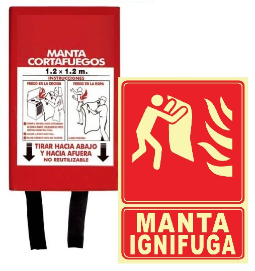
Cartell i manta inifuga Sufoca petits incendis inicials, apaga la roba cremant en una persona, o protegeix a algú durant una evacuació.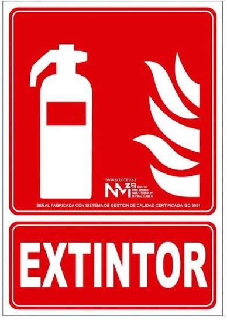
Retalladora És un senyal de seguretat normalitzada que indica de manera ràpida i clara on es troba un extintor portàtil per a actuar davant un incendi.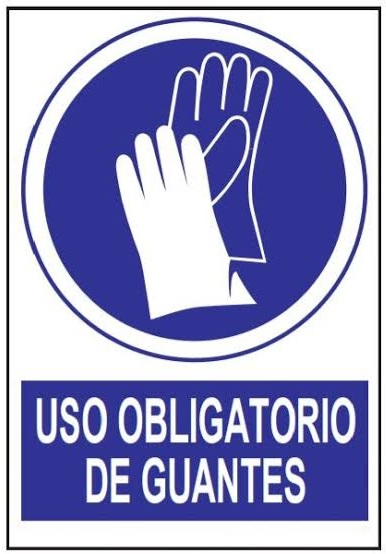
Cartell ús de guants Equips de Protecció Individual (EPI) dissenyats per a cobrir les mans, nines o avantbraços i evitar lesions en l'entorn laboral.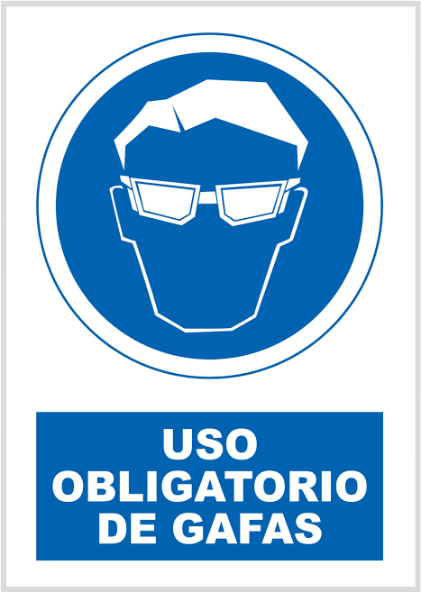
Cartell ús d'ulleres Equips de Protecció Individual (EPI) dissenyats per a salvaguardar els ulls enfront de riscos mecànics, físics o químics quan es treballa amb eines i màquines industrials.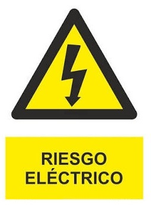
Cartell perill elèctric El cartell o senyal de quadre elèctric serveix per a advertir de la presència de risc elèctric (perill de descàrrega, arc elèctric o alta tensió) i protegir les persones d'accidents.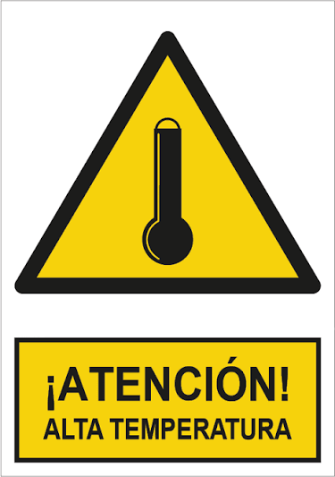
Cartell perill alta temperatura És un senyal de seguretat normalitzada que adverteix sobre l'existència de superfícies, equips, fluids o ambients calents que poden provocar cremades o danys a la salut.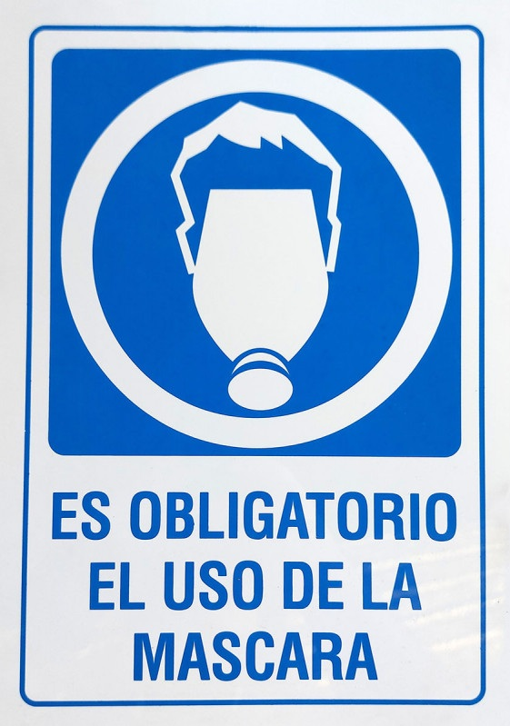
Cartell ús de mascareta És un senyal de seguretat normalitzada que indica l'obligació d'utilitzar protecció respiratòria en un espai determinat.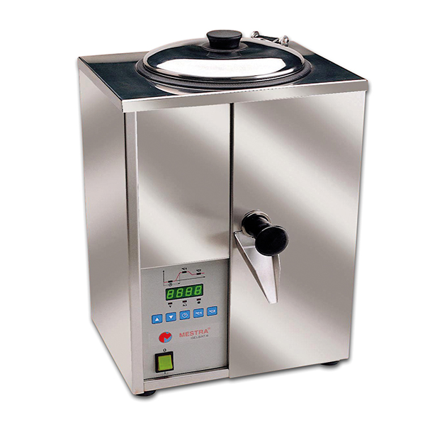
Gelatinitzadora Serveix per a escalfar, fondre, batre i mantenir en estat líquid el gel duplicador.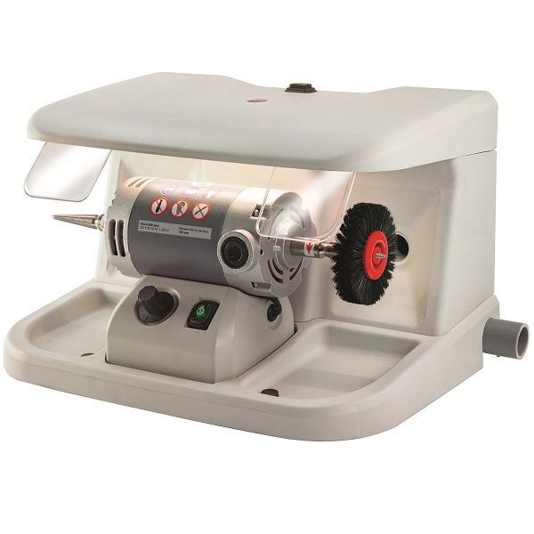
Polidora de metall Serveix per a allisar, escalabornar i donar un acabat brillant (tipus mirall) a les estructures metàl·liques de les pròtesis, corones, ponts o esquelets de crom-cobalt i titani.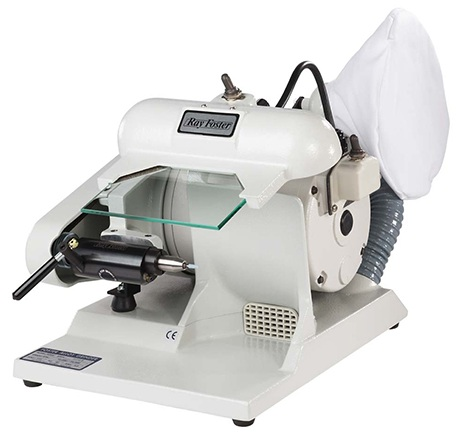
Polidora de ceràmica Serveix per a allisar, eliminar marques de mecanitzat i donar un acabat d'alta lluentor a corones, carilles, ponts i altres peces ceràmiques o de porcellana.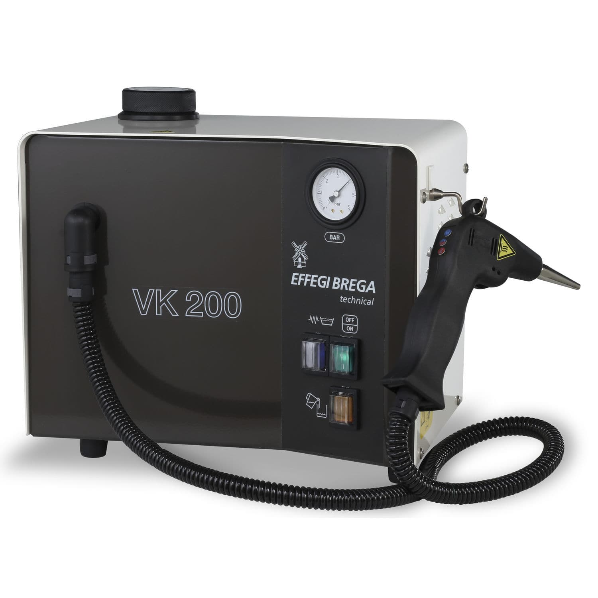
Vaporitzadora Màquina d'ús professional en laboratoris i clíniques odontològiques que emet un doll de vapor d'aigua calenta a alta pressió.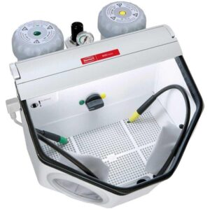
Arenadora Projecta aire comprimit i partícules abrasives (com a òxid d'alumini o perles de vidre) a alta velocitat contra la superfície de peces com a corones, ponts i estructures metàl·liques o ceràmiques.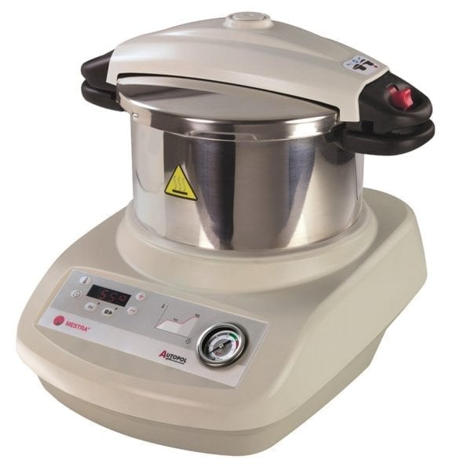
Olla automàtica S'utilitza per a endurir i consolidar les resines acríliques amb les quals es fabriquen les pròtesis, aparells d'ortodòncia i fèrules.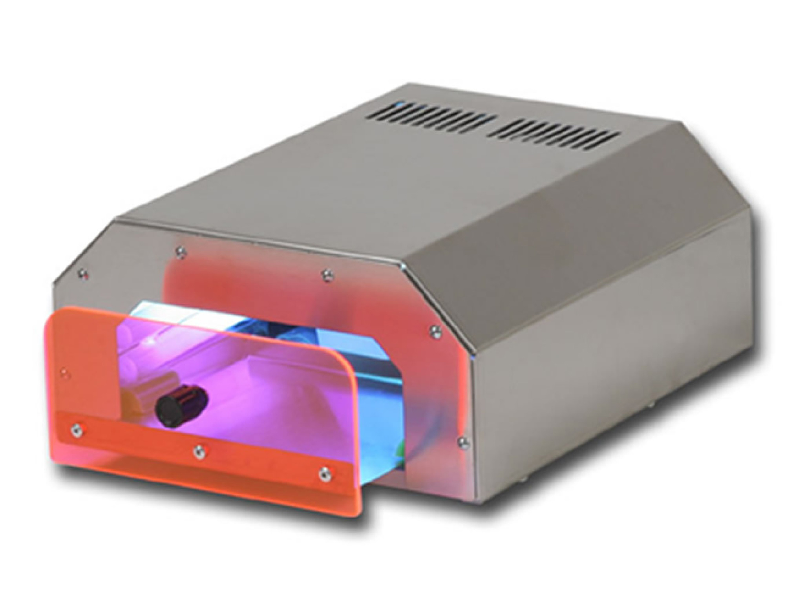
Llum fotopolimeritzadora Serveix per a endurir i consolidar de manera ràpida els materials resinosos i compostos (compòsits) fotosensibles utilitzats tant en la clínica com en el laboratori dental.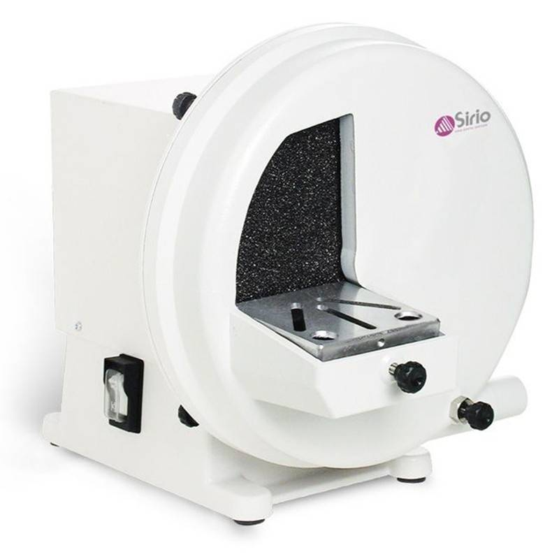
Retalladora Serveix per a per a tallar, anivellar i donar forma als sòcols i models de guix o resina.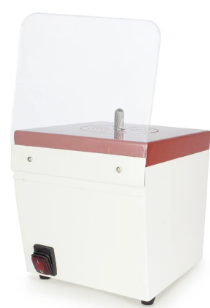
Retalladora interior Serveix per a l'acabat i buidatge de zones còncaves o internes dels models de guix.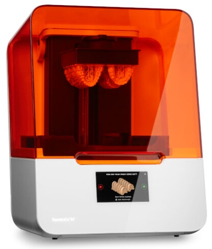
Impressora 3D Serveix per a fabricar elements de restauració bucal i ortodòncia de manera ràpida i altament personalitzada a partir de dissenys digitals en 3D.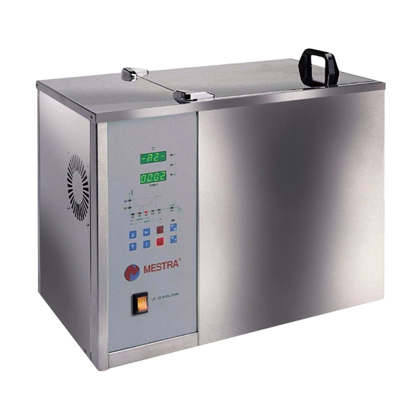
Bany d'aigua Serveix per a evitar que el material acrílic es deformi, es ressequi o perdi la seva forma original quan no s'emporta posada.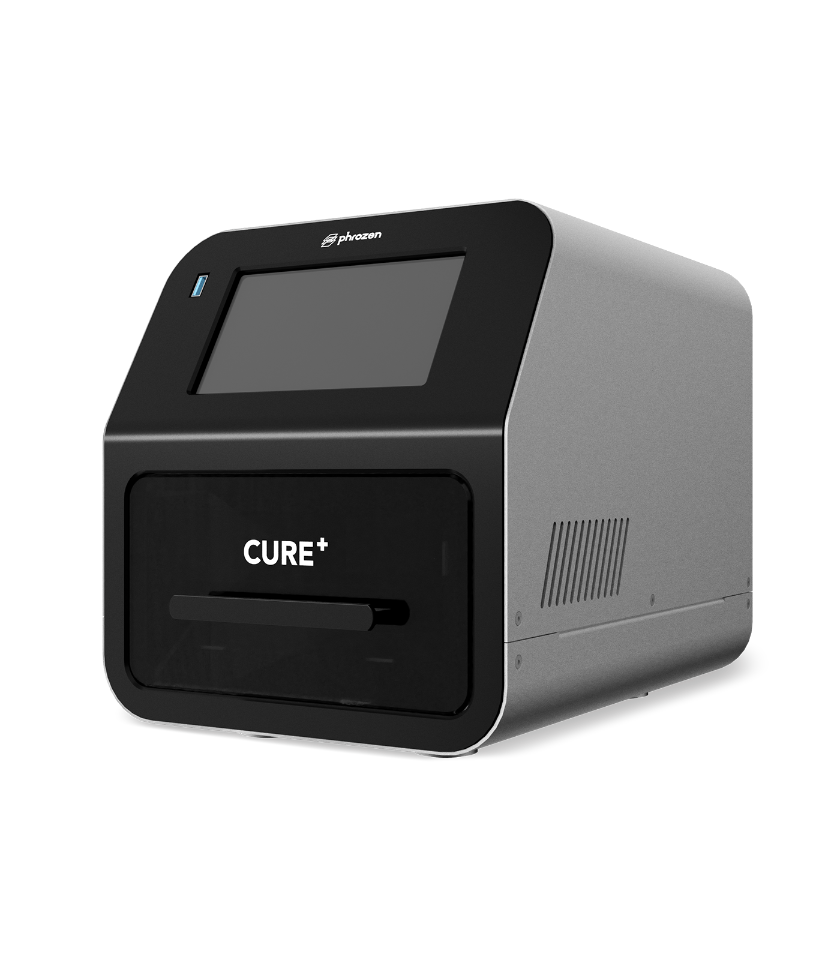
Llum ultraviolada Serveix per a endurir i consolidar de manera ràpida els materials resinosos i compostos (compòsits) fotosensibles utilitzats tant en la clínica com en el laboratori dental.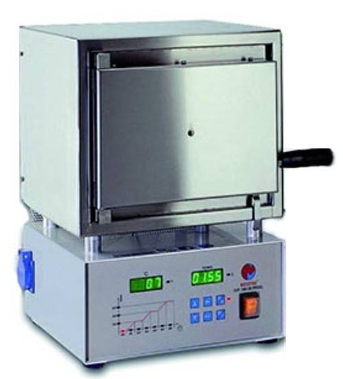
Forn preescalfament Serveix per a escalfar els cilindres de revestiment i els gresols abans de realitzar el procés de colat de metall o l'eliminació (fosa) de la cera dels motlles.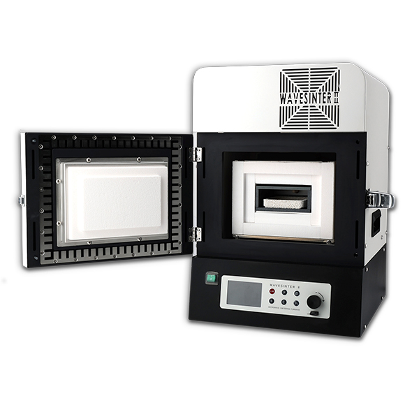
Forn pre zirconi Serveix per a transformar les peces de zirconi des d'un estat porós i fràgil (similar al guix o el guix després de ser fresades) en una estructura ceràmica completament densa, rígida i d'alta resistència mecànica.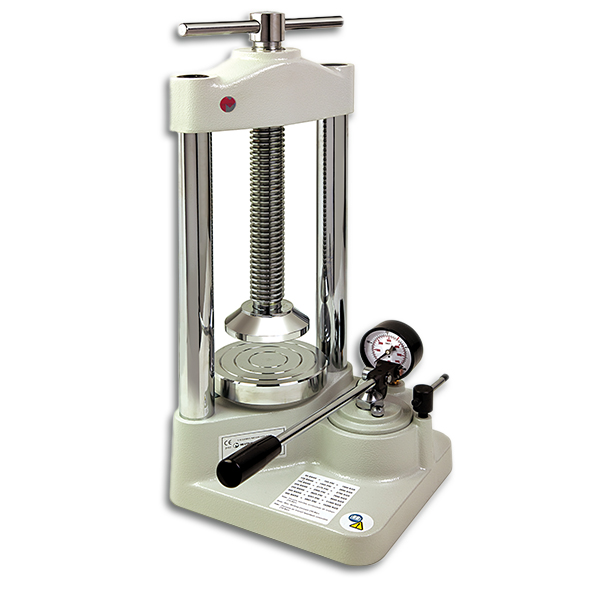
Premsa Serveix per a aplicar pressió controlada i uniforme sobre els motlles i materials (com a mufles amb resines acríliques o ceràmiques) durant la fabricació de dentadures i pròtesis.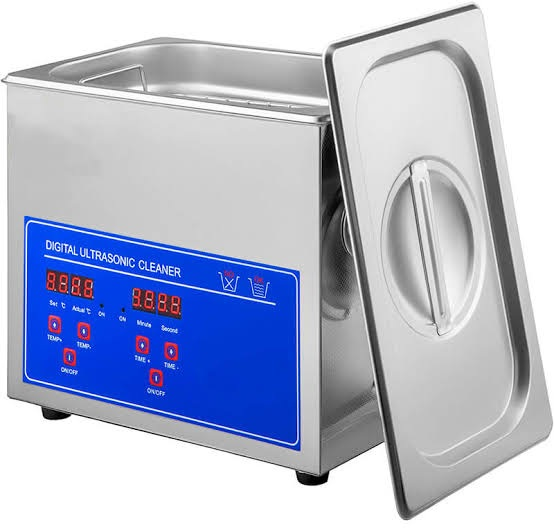
Bany alcohol isopropilic Serveix per a la neteja profunda, desinfecció i eliminació de residus de greix o cera durant el seu procés de fabricació o manteniment en el laboratori dental.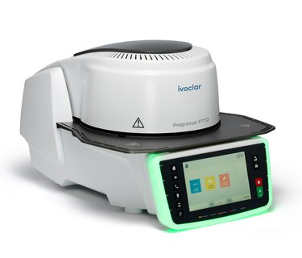
Forn ceràmic Serveix per a coure, sinteritzar, cristal·litzar, premsar i setinar materials ceràmics (com a porcellana, disilicat de liti o zircònia), transformant peces fràgils i poroses en restauracions fortes, duradores i amb acabat estètic natural.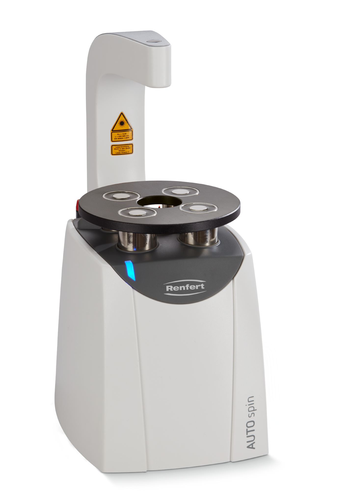
Autospin Serveix per a elaborar models de treball d'alta precisió amb plaques base de plàstic.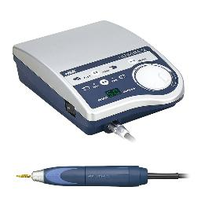
Micromotor Serveix per a treballar, ajustar i donar acabat a peces com a corones, ponts i dentadures postisses.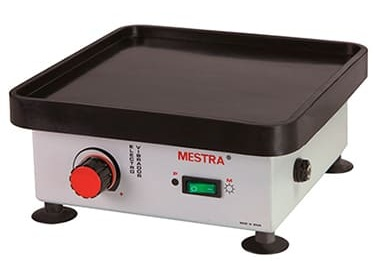
Vibradora Serveix per a eliminar les bombolles d'aire i aconseguir una mescla homogènia en preparar el guix o l'escaiola en el laboratori dental.